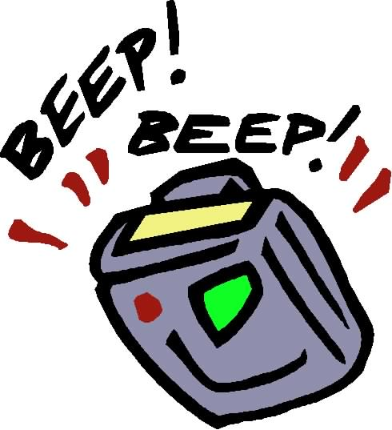

eepilepsy: The brief seizure interpreters sometimes suffer when their beepers go off, especially in vibrator mode. Characterized by physical spasms, goofy facial expressions, and stopping speech/signing in mid-sentence.
eepilepsy: The brief seizure interpreters sometimes suffer when their beepers go off, especially in vibrator mode. Characterized by physical spasms, goofy facial expressions, and stopping speech/signing in mid-sentence.

(The image above is from http://www.pceye.com/PcEye.htm (PC EYE PRO III documentation), which is no longer extant
eepilepsy: The brief seizure interpreters sometimes suffer when their beepers go off, especially in vibrator mode. Characterized by physical spasms, goofy facial expressions, and stopping speech/signing in mid-sentence.
 i, I'm not an interpreter, but deaf friend of mine sent this link to me [this Beepilepsy page] and we've been laughing all day. We both have pagers that vibrate because we both are oral deaf... Was funny because I recognized the name of one of the interpreter friends I had in college, on your web site!
Anyway so here's my story, if it is funny/touching enough to include in
your Beepsilepsy page...
i, I'm not an interpreter, but deaf friend of mine sent this link to me [this Beepilepsy page] and we've been laughing all day. We both have pagers that vibrate because we both are oral deaf... Was funny because I recognized the name of one of the interpreter friends I had in college, on your web site!
Anyway so here's my story, if it is funny/touching enough to include in
your Beepsilepsy page...
In the early 1990's, I participated in a grant program matching "assistive technologies" to deaf people in the work force - in this case, pagers with the vibrate signalling capability. I used it for most of three years before the program ended and I had to return it. Fast forward about five years, and I was pregnant with my son. I had been told to expect a "fluttering" or "butterfly" sensation the first time I would feel the baby's movements.
One day, as I was working in the kitchen, I felt this sensation in the right side about waist level, where I always had my pager before, and I thought, "Now, who is paging me!?" and reached down instinctively to get the pager - when suddenly I remembered, "HEY! I haven't had that pager in years!!" Boy! I was confused there for a few minutes before suddenly it dawned on me - "pager vibration" was actually the baby's first movements that I could feel!!
Of course, then I went nuts and had to call my husband and my mom and everyone else that I had felt the baby for the first time and that it was NOT my pager going off!!
ere is both my most awkward and most embarrassing interpreting situation. I was interpreting, on stage, for a comedic lecturer. He was sitting, center stage, on a three-legged wooden stool and I was provided with the same type
of stool, sitting on stage right. This was the arrangement the presenter
wanted for his presentation. He wanted to establish a more personal
environment between himself and the audience. I am not short, 5'11", but
those stools were very tall. When I sat on mine, my feet could not touch the
floor. I rested them on the wooden crossbar at the base of the stool. I was
comfortable and ready to interpret, but I had one concern. My pager was
hanging on the side of my belt. I thought to myself, "If that would come
loose, it would fall to the stage and possibly break." I decided to remove my
pager and place it on the stool between my legs. Yes, . . . I was an idiot.
Midway into the lecture, the agency paged me and my pager vibrated intensely
causing me to nearly shoot off of my stool. I tried my hardest to stay
composed, but I guess my facial expression told the whole story. The members
of the audience, who were deaf, were laughing. Thank goodness it was at the
same time the rest of the audience was laughing about something else the
presenter just said. I think that is the only thing that saved me from total
embarrassment. Today, I look back at that assignment and laugh, but it was
not that funny at the time. :)
 friend of mine working in a courtroom in CA a few years ago had her pager in her purse, but left it on "beep" (inadvertently) rather than vibrate. It went off, predictably enough. The judge asked what it was. "Oh, it's alright, your honor. It's just my vibrator." The court totally broke up -- fortunately she worked with this judge and crew quite frequently, so nobody was upset. But wowee, it sure was funny!
friend of mine working in a courtroom in CA a few years ago had her pager in her purse, but left it on "beep" (inadvertently) rather than vibrate. It went off, predictably enough. The judge asked what it was. "Oh, it's alright, your honor. It's just my vibrator." The court totally broke up -- fortunately she worked with this judge and crew quite frequently, so nobody was upset. But wowee, it sure was funny!
 he judge held captive a full courtroom and had a search done after someone's pager went off during court. She was determined to find out whose pager had gone off. . . held in contempt of court, fined and jailed. Depending upon your setting, silent or vibrate may be ncessary.
he judge held captive a full courtroom and had a search done after someone's pager went off during court. She was determined to find out whose pager had gone off. . . held in contempt of court, fined and jailed. Depending upon your setting, silent or vibrate may be ncessary.
 ne time I beeped a good female friend of mine in NYC and gave her co-workers a good laugh. It turns out she was having lunch with a few women in the office and they were having a great time telling jokes and living it up. When I beeped her, she 1) happened to be wearing a blouse with a frilly fringe around the chest area, 2) put her beeper on "vibrate", and 3) had the beeper in her blouse's breast pocket. Well, you know where this is going. Amy happens to be a full-figured woman and when the beeper went off, the fringe on her left breast started dancing. Her co-workers went ballistic with laughter. It took her a while to finally compose herself and called me.
ne time I beeped a good female friend of mine in NYC and gave her co-workers a good laugh. It turns out she was having lunch with a few women in the office and they were having a great time telling jokes and living it up. When I beeped her, she 1) happened to be wearing a blouse with a frilly fringe around the chest area, 2) put her beeper on "vibrate", and 3) had the beeper in her blouse's breast pocket. Well, you know where this is going. Amy happens to be a full-figured woman and when the beeper went off, the fringe on her left breast started dancing. Her co-workers went ballistic with laughter. It took her a while to finally compose herself and called me.
 eaf colleague and I were teaching a class of blind (yes partially sighted and blind people) Sign Language (they work with Deaf-Blind people, but that's not my point). Deaf person had his beeper on vibrate and because it bothers him (bulky in his pocket) he put it on one of the classroom chairs (hard plastic). It went off and there was deadly silence in the room. Sounded like the *biggest* fart. . . and looonnng!
eaf colleague and I were teaching a class of blind (yes partially sighted and blind people) Sign Language (they work with Deaf-Blind people, but that's not my point). Deaf person had his beeper on vibrate and because it bothers him (bulky in his pocket) he put it on one of the classroom chairs (hard plastic). It went off and there was deadly silence in the room. Sounded like the *biggest* fart. . . and looonnng!
 ust recently I was teaching a college class when I got a page followed by the urgent code. I don't receive the urgent code that often, and I recognized the phone number as a deaf person I know. I panicked inside, quickly gave the class a discussion topic, and excused myself momentarily. Come to find out, the deaf person had paged me with 'urgent' to inform me the deaf softball team had lost their first game that morning, but won at noon, so they would be playing again that evening in the tournament, and can I be there to play?
ust recently I was teaching a college class when I got a page followed by the urgent code. I don't receive the urgent code that often, and I recognized the phone number as a deaf person I know. I panicked inside, quickly gave the class a discussion topic, and excused myself momentarily. Come to find out, the deaf person had paged me with 'urgent' to inform me the deaf softball team had lost their first game that morning, but won at noon, so they would be playing again that evening in the tournament, and can I be there to play?
I didn't know whether to laugh or cry with relief that it wasn't an emergency! I envisioned an emergency room filled with deaf victims! I just took it in stride and went to the game later, and said I was happy the team progressed in the tournament, but next time to page me with an ASAP code, that I had been alarmed that something awful had happened. I was told, "Well, something awful ALMOST happened, we just barely won that game!" Ha ha! Another 'cultural conflict'.
 Return to the table of contents for "Humor and stories for interpreters".
Return to the table of contents for "Humor and stories for interpreters".